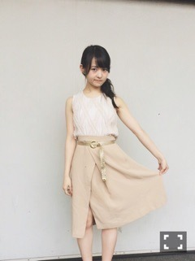
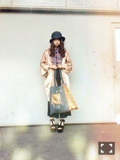

| 2015/08 03 Mon | 蓮と蟲。657回目 |
名古屋2日間
ありがとうございました！
全国握手会
途中、体調不良で
握手会を中止してしまいました。
楽しみにしていた方に申し訳ないです。
ペアだった琴子、ごめんね(T ^ T)
記念に一枚！
翌日の個別では復活して
最後まで元気に終わりました！
ご心配をおかけしました。
みなさん、くれぐれも
夏バテにお気をつけください、、

抹茶練乳のかき氷、美味しかった！

トップスのプリーツが珍しくて
お気に入り！
大人っぽいって言われた
嘘でも嬉しかったです＼(^o^)／
......
連載させて頂いている雑誌、
CUTiEが次号を最後に休刊します。
リニューアル前に一度掲載されて
リニューアル後には
ファッションページに
出させていただいて
その後、初の連載
"万理華の脳内"がスタートしました。
見開き2ページを
自由に使って良いと認めてくれて、
可能性を広げてくださった
編集長の田所さんへ
感謝の気持ちでいっぱいです。
始まってからは
編集の難しさを実感して
時間がないときは大変だったけど
なにより楽しくて。
自分の好きなことを好きなように
できる場があるのが本当に幸せで。
もうひとつお世話になっている雑誌
MdNで吸収したことを表現できる、
絶好の場でもありました。
自分の作ったページが
誌面に掲載されるなんて
本当に夢のようでした。
CUTiEをきっかけに
憧れのるうちゃんに会えたのも
思い出のひとつです。
たくさんお世話になったCUTiE。
連載が始まって、少しでも読者様に
好きになってもらえたかな？
今後読めなくなるのは
本当に残念ですが、
チャンスを与えてくださった
田所さんに、CUTiEに
恩返しができるくらい
活躍しなければと思いました！
まだまだ諦めず、
自分の好きなことを表現する場を
つくっていきたい！
また別のかたちで、
"万理華の脳内"が
たくさんの人の目に届きますように。
最終号、
よろしくお願いします！

最近の服装
ふにゃふにゃの帽子
チャイナボタン
テカテカなガウン
SINA SUIENのトート
来週から、ついに
真夏の全国ツアーが始まります！
たのしもーー！
我らの夏がはじまる（≧∇≦）
まりか
コメント(481)
2015/08/03 00:00